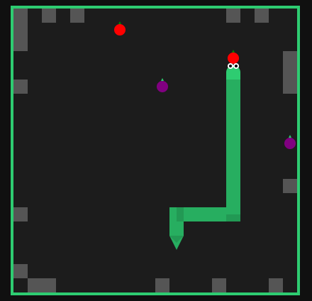

Jogo da Cobrinha

O Jogo da Cobrinha é um clássico digital conhecido por sua jogabilidade simples e divertida. Sua primeira versão foi inspirada no jogo Blockade, de 1976, e desde então ganhou várias versões em videogames e computadores.
Como funciona
- Modos de jogo: O jogo oferece dois modos principais: o modo tradicional, em que o jogador tenta preencher o maior número de espaços possível, e o modo limitado, em que o objetivo é alcançar 45 pontos antes de perder.
- Jogabilidade: O jogador controla a cobra em quatro direções: direita, esquerda, cima e baixo. A cada maçã comida, a serpente cresce e o desafio aumenta. A partida termina se a cobra bater na parede ou no próprio corpo.
- Maçãs adicionais: A cada 10 pontos, novas maçãs são geradas, tornando o jogo mais dinâmico.
Modos extras
Após completar uma partida com sucesso, o jogador pode escolher um desafio extra. Os desafios podem ser ativados juntos para aumentar a dificuldade.
- Purple Fruits: frutas roxas aparecem no mapa e devem ser evitadas. Se a cobra comer uma fruta roxa, o jogo termina imediatamente.
- Crushed: a borda do tabuleiro é preenchida gradualmente, reduzindo o espaço disponível. A cada 10 pontos, a quantidade de blocos aumenta.